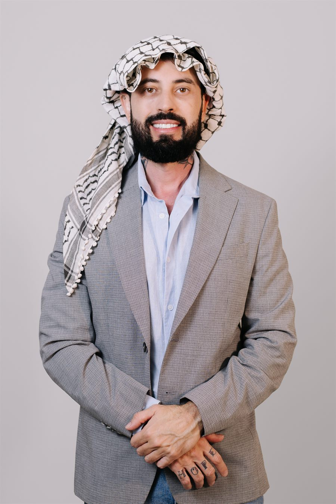
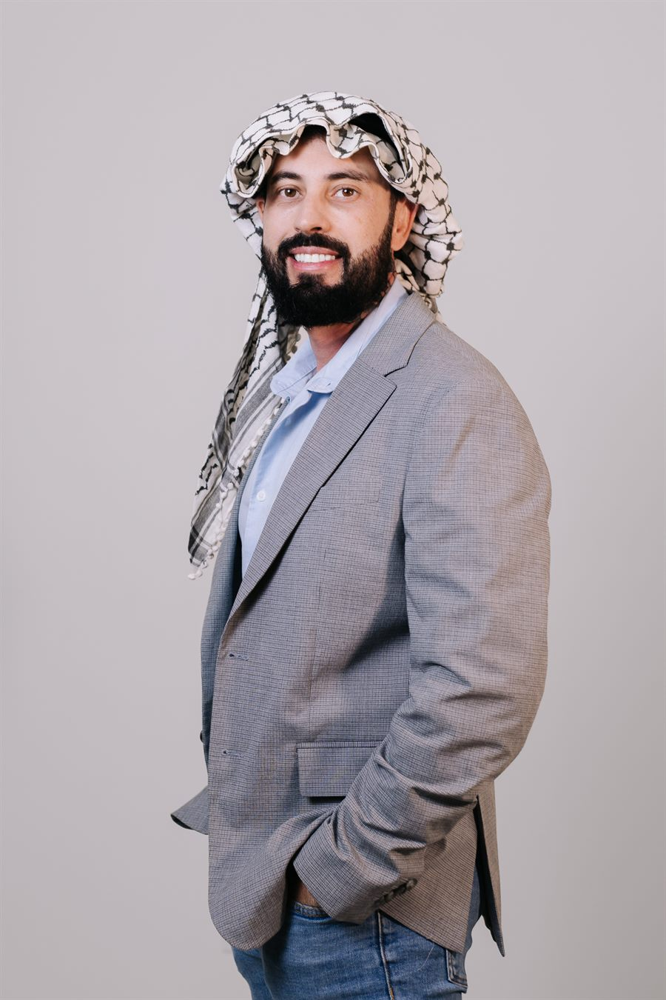

Cuidado
Proteção às pessoas, às famílias, às vítimas, às mulheres, aos jovens, às pessoas LGBTQIA+, aos agentes de segurança e aos demais grupos vulneráveis.
Sou delegado de carreira da Polícia Civil de Goiás, filho de uma professora da rede pública e de um imigrante palestino. São 12 anos enfrentando o crime e a certeza de que segurança de verdade se faz com cuidado, prevenção e comunidade.
Entre para a Tropa de Elite do Amor e venha construir esse Brasil com a gente.

Parte 1 / 3 O Delegado

Yasser Martins Yassine é delegado da Polícia Civil de Goiás. Filho de uma professora cearense da rede pública e de um pai palestino que chegou ao Brasil aos 18 anos como vendedor ambulante. O delegado Yasser carrega na sua história a origem humilde e a certeza de que as políticas sociais transformam vidas.
Anteriormente, foi advogado, professor e servidor da Justiça. Hoje, com mais de 927 mil pessoas acompanhando seu trabalho nas redes sociais, leva à política a mesma bandeira do dia a dia na delegacia: segurança com cuidado, prevenção e comunidade.
Filho de mãe cearense, professora de artes da rede pública, e de pai palestino, que chegou ao Brasil aos 18 anos, como vendedor ambulante.
Advogado criminalista, professor universitário e servidor do Tribunal de Justiça do DF e dos Territórios (TJDFT).
12 anos na Polícia Civil de Goiás. Chefiou a Delegacia da Mulher (DEAM), a Delegacia Especial de Investigação Criminal (GEIC), em Formosa, e a Delegacia de Polícia de Planaltina de Goiás.
Pós-graduado pelo FESMPDFT, MBA em Gestão de Segurança Pública (UnB) e mestrando em Segurança Pública (UFG).
Pré-candidato a deputado estadual pelo PT-GO, com foco em todo o estado de Goiás.
Três pilares que sustentam uma política de segurança pública de verdade.
Proteção às pessoas, às famílias, às vítimas, às mulheres, aos jovens, às pessoas LGBTQIA+, aos agentes de segurança e aos demais grupos vulneráveis.
Inteligência, iluminação, juventude, escola, cultura, tecnologia e presença do Estado.
Moradores, lideranças, comerciantes, servidores, escolas, coletivos e Estado atuando juntos.
Educação e segurança pública no centro — com olhar de quem vive a realidade das ruas e das delegacias.
Combate ao crime organizado com inteligência, investigação que funciona e polícias bem treinadas, equipadas e valorizadas — para que ninguém viva com medo. Nem na rua. Nem em casa.
Yasser veio da periferia e chegou à delegacia porque encontrou caminhos e oportunidades. Todo jovem merece sonhar antes que o crime tente decidir seu futuro.
Filho de escola pública e de professora: defender a educação é abrir a porta de saída da desigualdade.
Políticas sociais que mudam vidas — como mudaram a minha. Dignidade para quem mais precisa em Goiás.
O que orienta cada passo dessa caminhada.
O crime organizado é o capitalismo de fuzil. As naves, os cordões e os panos de grife estão nas mãos dos patrões. Quem segura o corre, o avião, o peão, o soldado segue morrendo na quebrada, sem nome e sem glória. Não tem distribuição de renda. Só exploração.— Delegado Yasser
Onde o Estado é mínimo, o crime organizado é máximo.— Delegado Yasser
Eu sei o valor das políticas públicas. Cresci na quebrada de Planaltina, onde a violência era rotina. Eu virei delegado. Mas podia ter virado estatística. Eu sou o exemplo prático de que a educação transforma.— Delegado Yasser
Mudar o nome do problema não resolve o problema. Chamar o faccionado de terrorista vai mudar o que na sua vida? Quantos bairros deixarão de ser dominados pelo crime organizado com essa mudança?— Delegado Yasser
Tem político que trata a segurança pública como espetáculo. Muita fumaça e barulho, mas zero resultado.— Delegado Yasser
Todo mundo quer uma polícia mais bem equipada e mais eficiente. Quem gosta do mau policial é bandido e quem apoia bandido.— Delegado Yasser
Parte 2 / 3 As Redes
Mais de 927 mil pessoas acompanham o trabalho do Delegado Yasser. Siga, compartilhe e traga mais gente para a caminhada.
E milhares de pessoas nos grupos da Tropa de Elite do Amor no Instagram, WhatsApp e TikTok.
Dados de alcance nas redes do Delegado Yasser.

Nossa missão é transformar mobilização nas redes em presença real: ouvir a população, mapear os espaços do medo e construir uma segurança pública que faça as pessoas viverem sem medo na rua e em casa.
Quando o Estado abandona, o crime ocupa. Por isso queremos polícia valorizada, investigação funcionando e comunidade protegida.
Como você pode ajudar:

Campanha se faz com gente — e também com recursos. Apoie com qualquer valor pelo financiamento coletivo oficial, com doação segura e lista pública de doadores.
♥ Apoiar a campanha apoiar.me/delegadoyasserParte 3 / 3 O Movimento
Escolha a forma de participação que combina com você. Toda ajuda conta.
Compartilhe conteúdos, comente posts e ajude a mensagem a chegar mais longe.
Quero esta missãoEnvie relatos sobre lugares onde as pessoas sentem medo.
Quero esta missãoAjude a organizar apoiadores na sua cidade ou bairro.
Quero esta missãoReúna pessoas para conversar sobre segurança e comunidade.
Quero esta missãoIndique lideranças, movimentos, coletivos e pessoas importantes.
Quero esta missãoConte para a gente: rua escura, praça abandonada, ponto de ônibus inseguro, escola vulnerável. Sua resposta vira proposta real para Goiás.

Simples, rápido e sem complicação. Em poucos minutos você já está no time.
Você preenche o formulário.
A equipe vê sua cidade e missão.
Você entra no grupo correto.
Recebe sua primeira missão.
Ajuda a mobilizar o estado.
Acompanhe as próximas ações da campanha.
As próximas ações serão divulgadas em breve. Cadastre-se para ser avisado em primeira mão.
Acompanhe as novidades da campanha.
As notícias da campanha serão publicadas em breve. Enquanto isso, acompanhe o dia a dia nas redes do Yasser.
Brasil sem medo se constrói no encontro com as pessoas.


Preencha seus dados, escolha como quer ajudar e a equipe vai direcionar você para o grupo certo. Brasil sem medo começa com gente organizada.

Não perca a chance de fazer parte desse movimento. Sua participação transforma apoio em ação concreta. Vem com a gente construir esse Brasil.